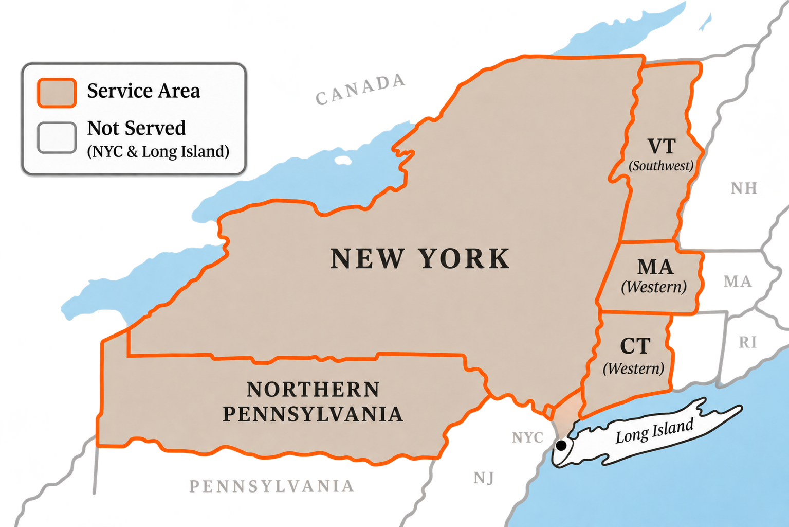

K&P Powdertec Mobile Sandblasting is a specialty contractor focusing on providing industrial abrasive blasting, high-performance coatings, and precision surface preparation. The shop is located in Sandy Creek, New York and serves most of New York State, Northern Pennsylvania, and Western Connecticut. Our clients range from individuals to town municipalities to natural gas utilities, and everything in between.
This is not a general painting business. Every job requires corrosion control and/or surface protection and the results are expected to last decades, not years. Meeting these expectations requires technical knowledge and experienced craftsmen, which is what we bring to your project.
Serving customers throughout New York State, Northern Pennsylvania, and Western Connecticut.

**The map is a guideline of areas we will travel to. Contact us to confirm if you are in our service area**